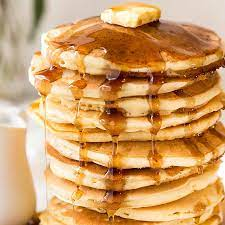

Homemade Pancakes

Description
A warm buttery stack of homemade pancakes. Quick and easy to make in 20 minutes.
Ingredients
1 1/2 cups all-purpose flour
3 1/2 teaspoons baking powder
1/4 teaspoon salt, or more to taste
1 tablespoon white sugar
1 1/4 cups milk
1 egg
tablespoons butter, melted
Directions
- In a large bowl, sift together the flour, baking powder, salt and sugar. Make a well in the center and pour in the milk, egg and melted butter; mix until smooth.
- Heat a lightly oiled griddle or frying pan over medium-high heat. Pour or scoop the batter onto the griddle, using approximately 1/4 cup for each pancake. Brown on both sides and serve hot.